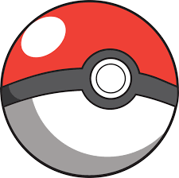

Bulbasaur is a dual-type Grass/Poison Pokémon introduced in Generation I, famously known as the very first entry (#0001) in the National Pokédex . Alongside Charmander and Squirtle, it serves as one of the original starter choices in the classic Game Boy games, Pokémon Red and Blue.
Bulbasaur is a small, quadrupedal Pokémon that blends mammalian and reptilian features, closely resembling a stout, turquoise-blue dinosaur or frog with distinct, dark green spots. Its most defining characteristic is the large green plant bulb firmly grown onto its back, which was planted there at birth and shares a symbiotic relationship with the Pokémon. This bulb absorbs sunlight to fuel photosynthesis, providing Bulbasaur with energy, storing nutrients, and allowing it to sprout two long, versatile Vine Whips from its sides to navigate its surroundings or defend itself in battle. Known for its docile, loyal, and incredibly resilient nature, this iconic Grass/Poison-type starter stands proudly as #0001 in the National Pokédex, cementing its legacy as a beloved fan-favourite across the entire Pokémon franchise.


| Bulbasaur | Ivysaur | Venasaur |
|---|---|---|
| Grass | Fire | Water |
| Ground | Ground | Aquatic |
| Fire | Water | Electric |